Purge Bin
A slim side bin for the A1 Mini. It sits on the desk against the printer's left side, under the end of the gantry where the wiper drops purged filament. Same family as the hub: white shell, black base set in as a shadow line, 10 mm corners, one small engraved label.

Clears the gantry by 17.8 mm
You measured 70 mm under the left end of the gantry. The bin is 52.2 mm tall, so the rim sits 17.8 mm below anything that moves over it. purge_bin.py now holds that 70 mm and stops the build if the bin ever grows within 5 mm of it.
Placement: line the bin up under the wiper, with the long side against the printer. The 67 × 145 mm opening leaves plenty of room either side of where the purge drops.
Around the bin
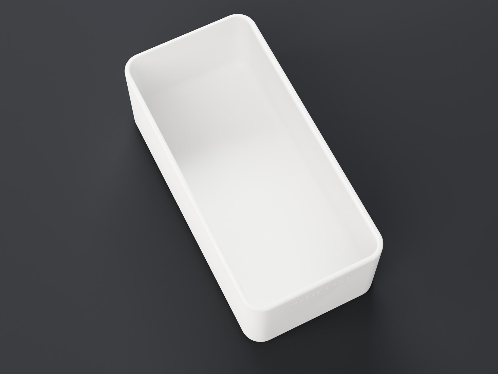

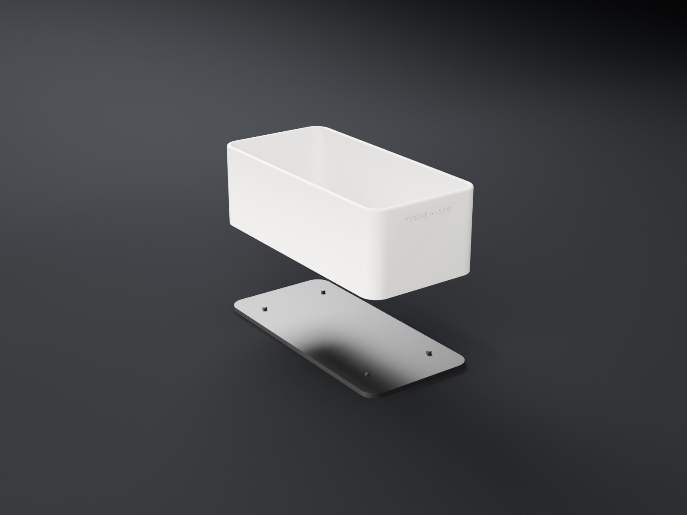

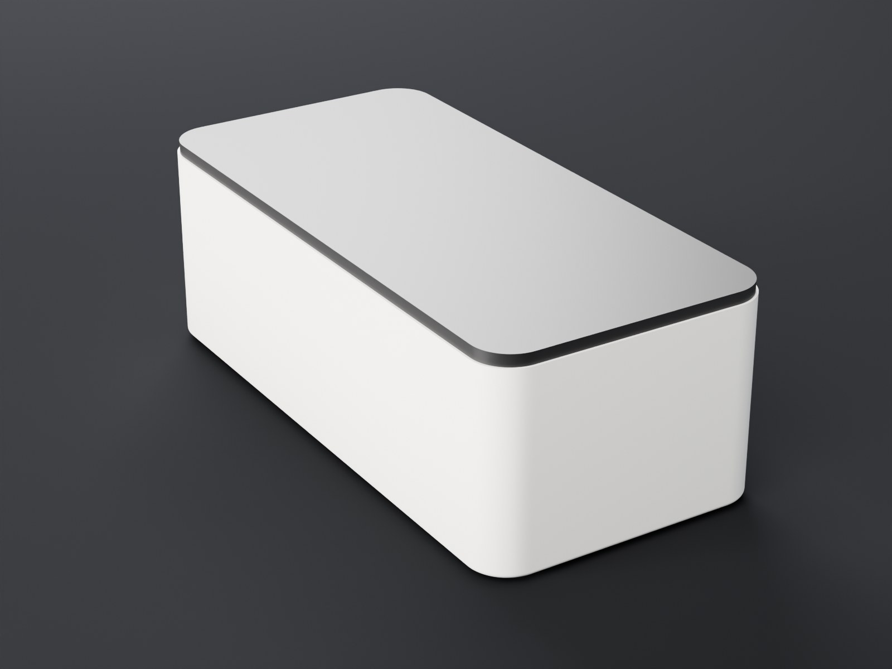
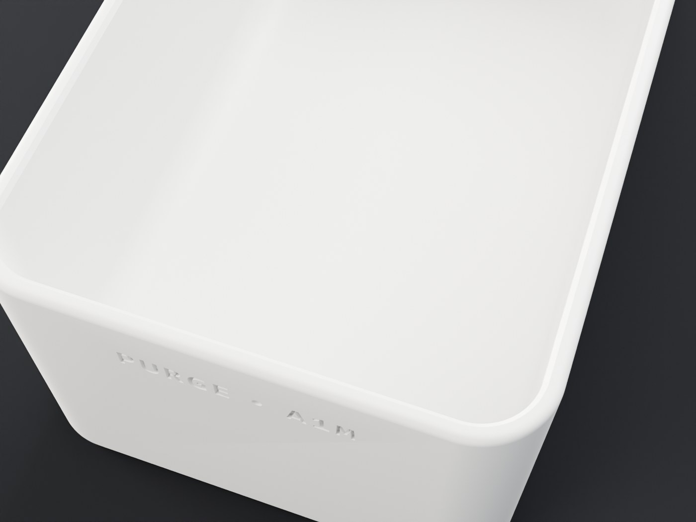
Close-ups
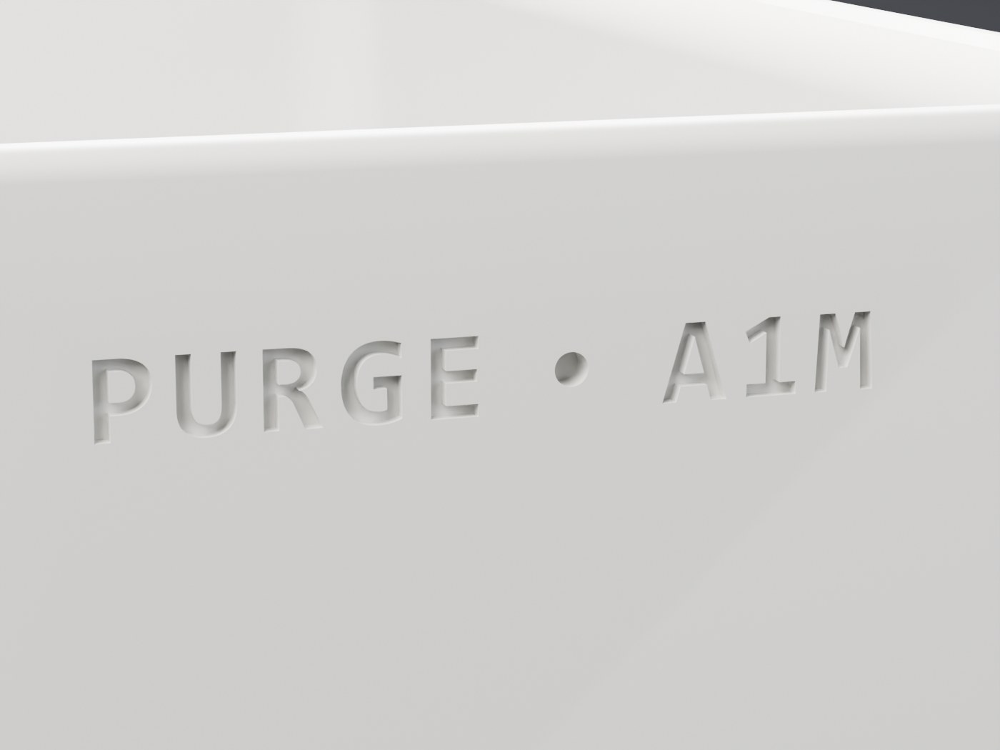


The dot
Every product label splits its words with the house dot instead of a slash. It's modelled geometry, not a font glyph: Ø1.3 mm at 6 mm text, centred on the cap height like a dot-product dot, and cut 1.2 mm deep, twice the letters, so it always reads a shade darker.
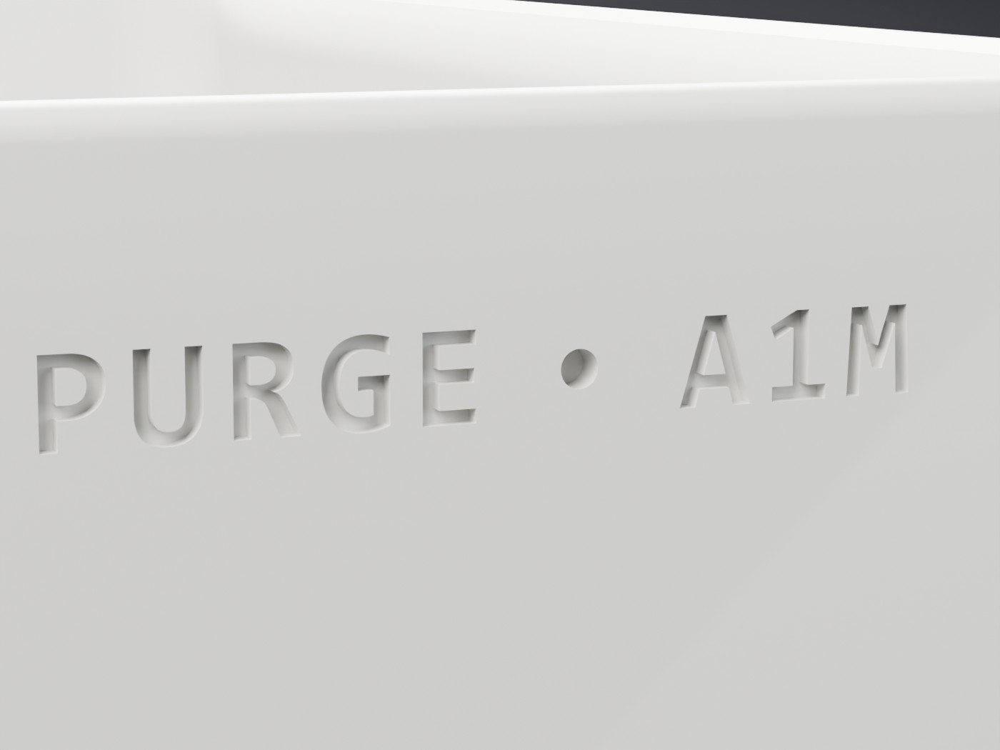
Also considered:
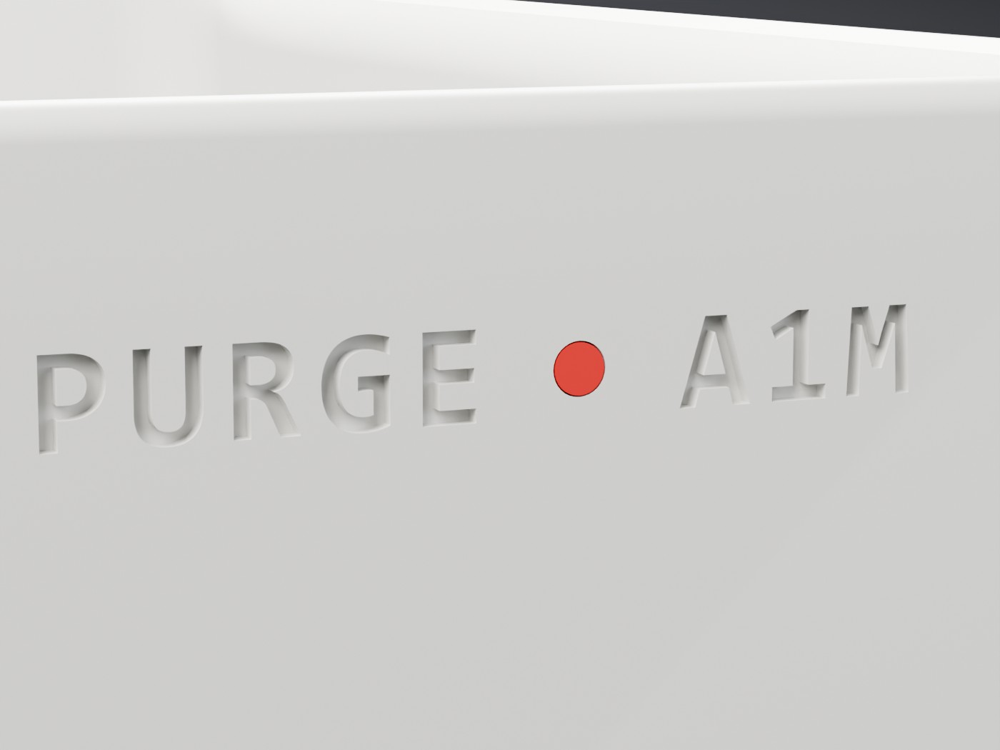
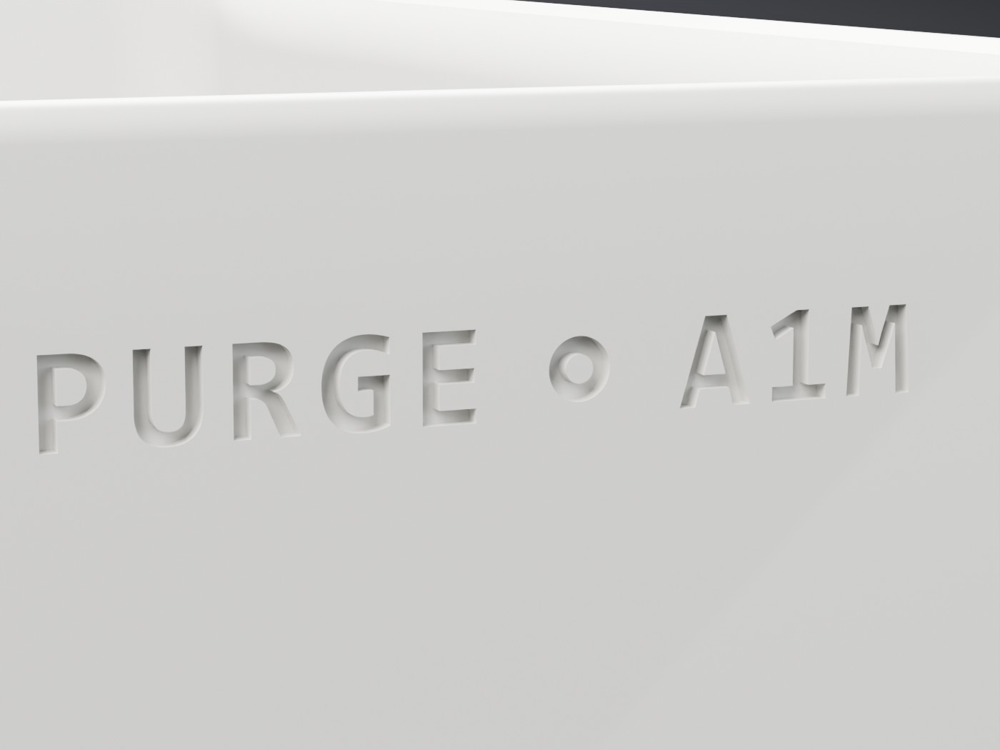
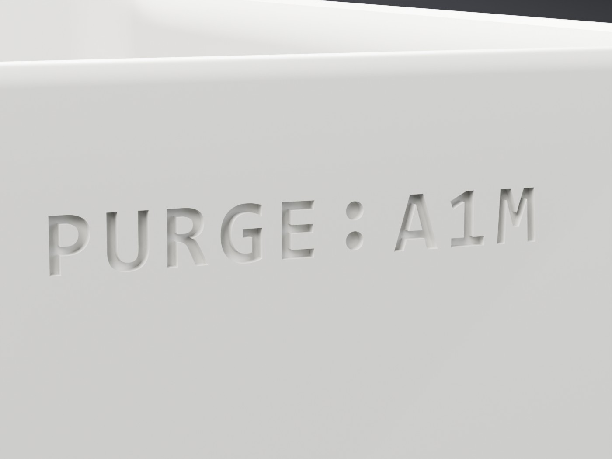
Dimensions
Click any image to open it full size; click again for 1:1 pixels.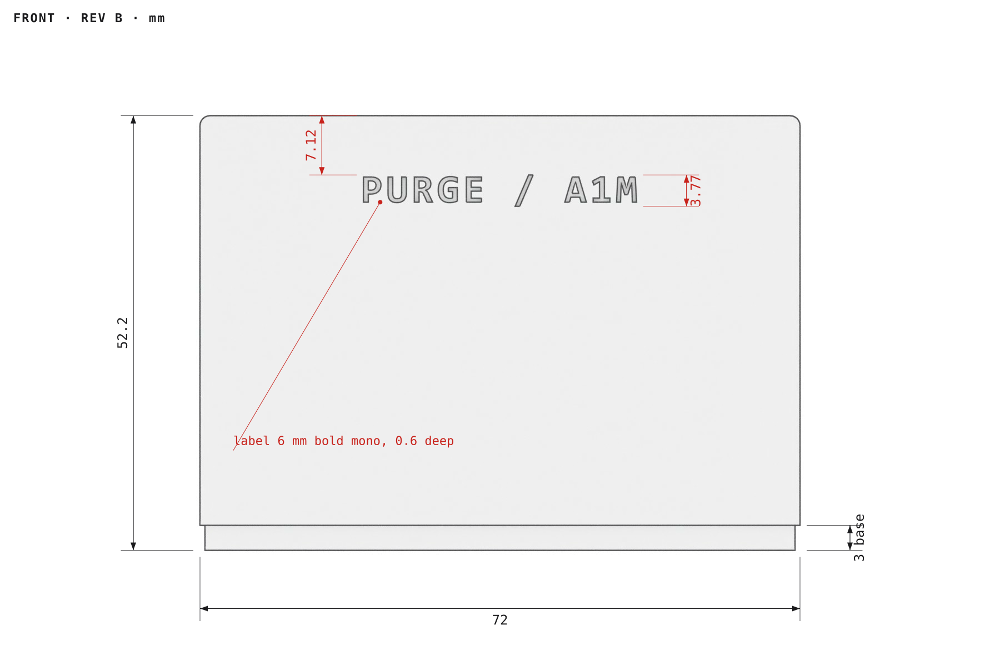

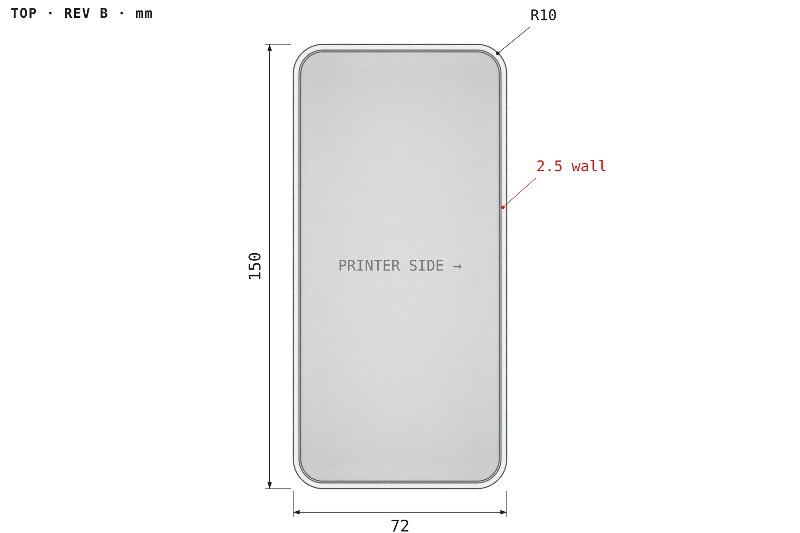
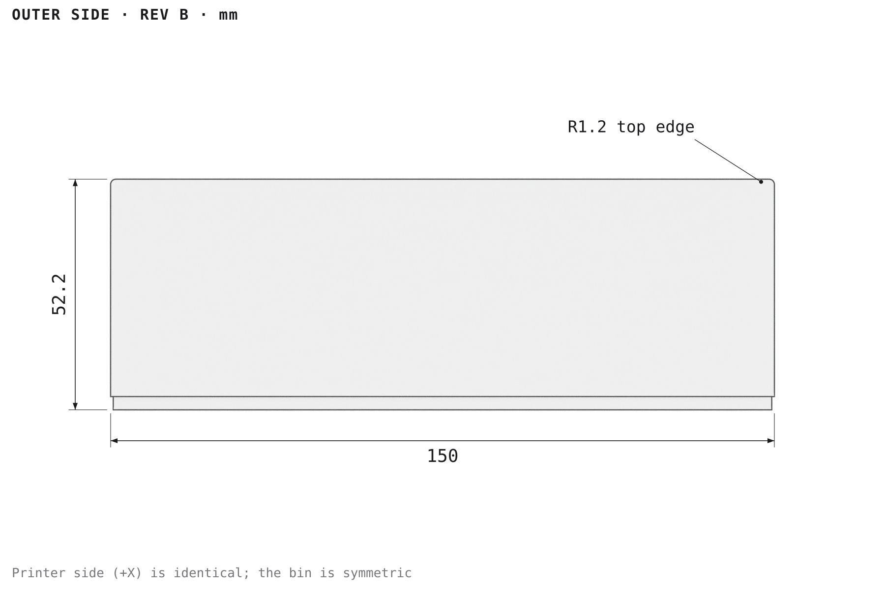
What the review found, and what changed
Independent review against the house checklist: geometry, mesh health, and every layer of the sliced G-code.
Fit under the gantry wasn't measured
You measured 70 mm of clearance against a 52.2 mm bin. The model now checks it.
Wall printed as two shells around sparse infill
The infill grid would ghost through white PLA. Now three wall loops: six solid lines across the 2.5 mm wall (checked at z = 20).
Seam ran down the outward-facing side
The shell is now turned 90° on the plate with the seam set to the back. 741 of 770 outer-wall starts now land on the printer-facing side, out of sight.
Pins too tight to drop the shell on blind
Holes are now Ø3.4 and pins Ø3.0 × 1.8 with a 0.4 mm lead-in, leaving 0.6 mm of clearance at the tips. You can glue it with CA or leave it loose.
Floor would pillow
Eight top layers instead of five.
Sharp inside rim, elephant's foot at the shadow line
Added a 0.6 mm chamfer inside the rim and 0.15 mm elephant-foot compensation.
Label said A1, not A1 Mini
Now PURGE · A1M. Every letter survives on all 31 layers it spans.
No feet on the base
Glued, it's one solid part and doesn't slide. Stick-on bumpers work if you want them.
Two plates, one colour each
Shell · white PLA
- File
print_shell_white.gcode.3mf- Orientation
- Upright, open top up, no supports
- Time
- 1 h 51 m
- Filament
- ~88 g
Base · black PLA
- File
print_base_black.gcode.3mf- Orientation
- Flat, pins up
- Time
- 38 m
- Filament
- ~27 g
- Settings: 0.12mm Fine @BBL A1M, Bambu PLA Basic, Textured PEI. Changes from the preset: 3 walls, 8 top layers, seam at back, elephant-foot compensation 0.15.
- The times are Bambu Studio CLI estimates. Check them in the Studio GUI before sending.
- Nothing has been sent to the printer.
Where the idea came from
- Most community A1 Mini bins sit under the left side of the printer, under the wiper. That's the placement used here.
- References: A1 Mini Side Tray Organizer & Poop Tray "Slim", Poop Holder A1 / A1 Mini, A1 mini Purge Bucket Bin, and Bambu's purge wiper page.